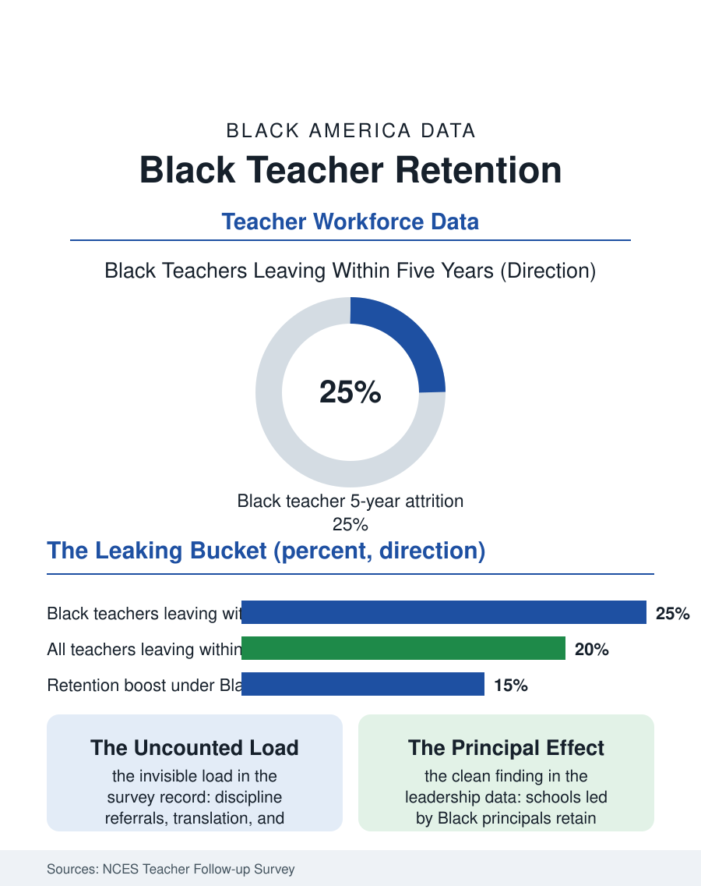

Black Education
The Revolving Door: Keeping Black Teachers
Black teachers leave at higher rates under loads the workload accounting never counts, and the cost compounds across every student they would have taught. The retention file.

America does not only have a teacher recruitment problem; it has a teacher keeping problem, and nowhere more sharply than with Black teachers, who leave the profession at higher rates than their white colleagues in the federal workforce data. The loss compounds the two percent problem of the male teacher file and the seven percent problem overall: the pipeline's output leaks from the bucket's bottom. This article reads the retention file, the record of why Black teachers go and what keeps them.
The Revolving Door's Address
The National Center for Education Statistics' teacher follow-up surveys give the file its shape. Black teachers' attrition, leaving the school or the profession, runs above the national rate, and the departures are not randomly distributed: they concentrate in the high-poverty urban schools where Black teachers disproportionately teach, schools whose conditions, the discipline loads, the resource scarcity, the leadership churn, drive attrition for every teacher in them, so that a share of the racial gap is a placement gap wearing racial clothes. The surveys' finer cut refuses to let placement carry the whole explanation: within similar schools, Black teachers report distinct burdens in the qualitative and survey record alike, the cultural taxation this atlas has met before, the discipline referrals routed to the Black teacher, the parent conferences she is asked to translate across cultures, the committee and mentorship loads assigned by affinity rather than by schedule, all uncompensated, all invisible in the workload accounting, all accumulating toward the exit interview's polite phrase about fit. The pay file adds its arithmetic: Black teachers are likelier to carry student debt from the loan file, likelier to support extended family on the salary, and teaching's compressed wage scale gives the experienced Black teacher the same raise as everyone, which is to say a declining real wage against the private alternatives her degree commands.
What the Stayers Report
The retention literature's positive findings are as specific as its diagnoses. Black teachers stay where they are led well: administrative support is the strongest single predictor in the surveys across all groups, and its racial dimension appears in the leadership data, schools led by Black principals retain Black teachers at measurably higher rates, one of the file's cleanest findings, implicating the principal pipeline as a retention intervention in itself. They stay where the taxation is shared: schools that staff discipline and family liaison as roles rather than racial assignments, that count mentorship in the schedule, retain the teachers those loads otherwise burn. They stay where the mission is resourced: the surveys are full of Black teachers describing a calling to teach Black children that no private salary has outbid, alongside the resentment that the calling is treated by the system as a subsidy, the expectation that devotion will absorb what funding should cover. The HBCU teacher pipeline's graduates show the file's distinctive pattern, entering at high rates into the hardest schools on mission, and the retention question for them is whether the system will meet the mission halfway before the fifth year, the attrition cliff's edge in every group's data.
The Arithmetic of Loss
Each departure costs more than a vacancy. The replacement economics are counted in the district studies, recruiting and training a new teacher priced in the thousands to tens of thousands, but the file's real arithmetic is the matched-teacher research restated: every Black teacher who leaves takes with her the effect the studies measure, the graduation and college enrollment deltas for the Black students she would have taught across a thirty-year career, compounded across hundreds of students, so that retention is not a workforce metric but an achievement intervention with a multiplier no curriculum purchase matches. The policy instruments are correspondingly direct: loan forgiveness scaled to service in the schools that need the teachers, salary differentials for the hard-to-staff buildings rather than the hard-to-staff subjects alone, principal pipeline investment, and the workload audit, the simple administrative act of counting who actually carries the discipline, translation, and mentorship loads, which districts that have performed it describe as the cheapest retention intervention they ever bought, since the loads, once counted, could be shared, staffed, or paid. The retention file closes with the exit interview's unreliability: teachers rarely name the real ledger on the way out, so the system keeps misreading departures as personal choices while the surveys, read whole, describe structural ones. The teachers are not leaving teaching, in the main. They are leaving the conditions the data itemize, and conditions, as every file in this atlas eventually concludes, are choices somebody is making, which means they can be made differently by Tuesday.
More in Black Education
Black Educational Attainment: High School Parity, the College Gap
About 89 percent of Black adults hold a high school diploma and one in four holds a bachelor's degree or higher — the attainment ladder, the college completion gap, and the generational trend.
Historically Black Colleges and Universities: Enrollment and Degrees
More than 100 HBCUs enroll roughly 290,000 students and award about one in six Black bachelor's degrees — an outsized share from a small sector. The federal education data.
Black College Enrollment: 2.4 Million Students
About 2.4 million Black students are enrolled in American colleges — nearly two-thirds of them women. The NCES enrollment data by sector, level, and trend.
Source: National Center for Education Statistics, Schools and Staffing and Teacher Follow-up Surveys; Learning Policy Institute retention research.